Fitting, and Overfitting
One straight line, then everything that can go wrong.
Albert No · Yonsei University
Sangnam AI Leader · Week 3
This Session
Fitting a Line
The simplest method there is, with every part visible
The Recipe, Unchanged
- Collect examples: an input $x$, an answer $y$.
- Choose a family of allowed functions.
- Keep the member that scores best on the examples.
Fill in the three blanks and you have a method.
Heights and Weights
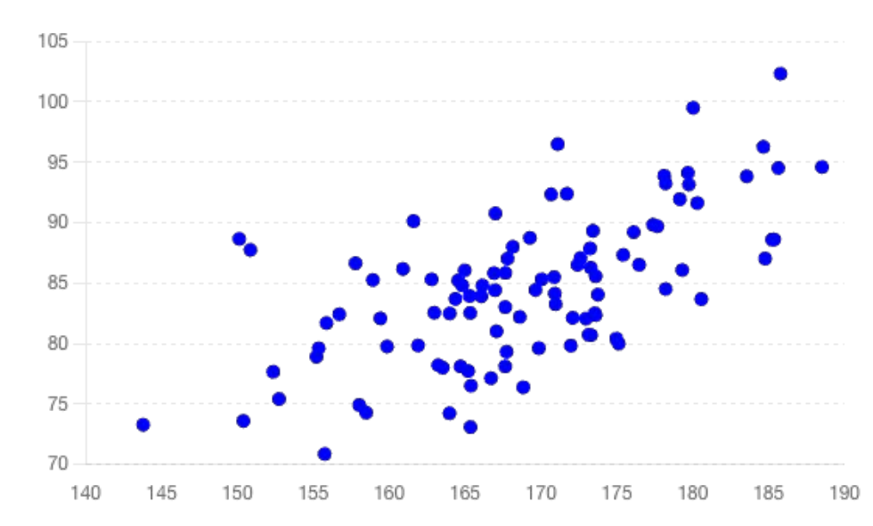
One dot per person. Height across, weight up.
The Job: Height In, Weight Out
The answer is a number, so this is regression.
A Family of Straight Lines
Dial $a$
The tilt. Kilograms gained per centimetre.
Dial $b$
The height of the line. Where it starts.
Two numbers name one line. Choosing the model means choosing them.
Which of These Is Best?
Measure Every Miss
Each red segment is one error. A good line makes them all short.
Why Square the Gaps?
- Raw gaps cancel. Too high plus too low reads as perfect.
- Squaring punishes one large miss more than many small ones.
- Squares are smooth, so the search for the best line is easy.
Absolute gaps and perpendicular gaps also work. Squares are the convention.
One Number for the Whole Dataset
Mean Squared Error. The average of the squared misses.
Two dials in, one score out. Lower is better.
Training Is Turning the Dials
Keep adjusting while the score falls. Stop when it stops falling.
The Winning Line
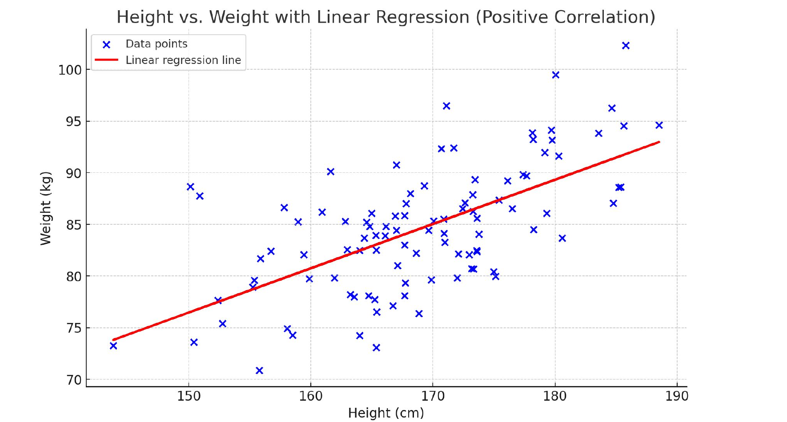
Out of every possible line, this one scores lowest.
What the Dials Tell You
Sign
Positive tilt. Taller goes with heavier.
Size
Roughly half a kilogram per centimetre.
A fitted model summarises the data. Read it, do not just run it.
Linear Regression, Complete
- Data: heights paired with weights.
- Family: every straight line.
- Score: mean squared error.
- Search: turn the dials until the score stops falling.
That is a whole machine-learning method. Nothing is hidden.
More Columns, More Shapes
The same machine, fed a wider table
Two Inputs Instead of One
One input gives a line. Two give a flat sheet. The idea does not change.
Many Inputs, Same Shape
- One dial per column, plus one offset.
- Ten columns, ten dials. A thousand columns, a thousand dials.
- Modern models are this, with billions of dials.
A Table You Already Have
| Customer | Months | Monthly spend | Support calls | Churn risk |
|---|---|---|---|---|
| A | 34 | ₩82,000 | 0 | 0.04 |
| B | 3 | ₩29,000 | 4 | 0.71 |
| C | 18 | ₩55,000 | 1 | 0.22 |
Three columns are the input $x$. The last column is the answer $y$.
A Straight Line Cannot Bend
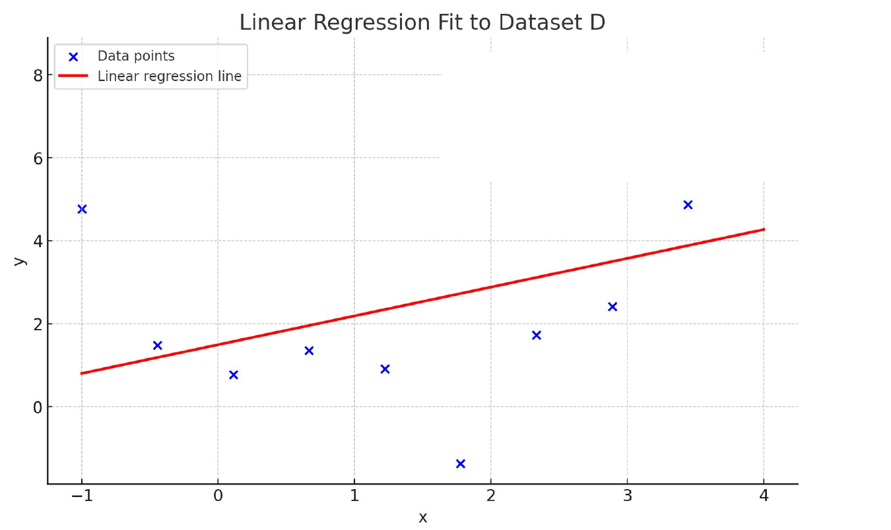
The data curves. The best line still misses.
Give It a Curved Column
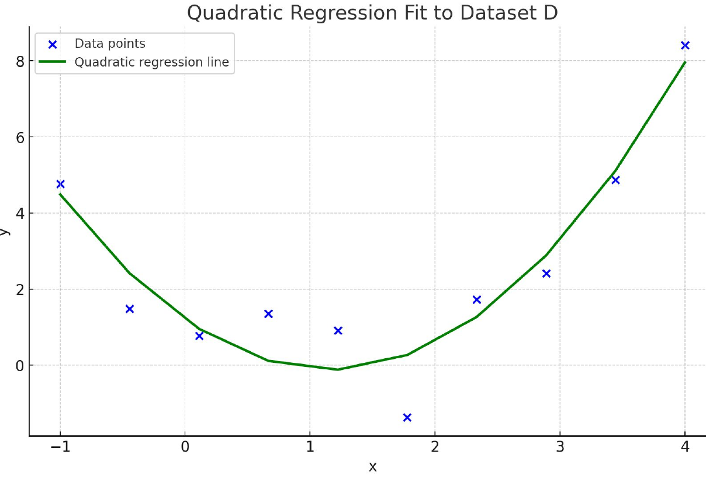
Hand the model $x^2$ as an extra column, and it can bend.
Still a Weighted Sum
The curve lives in the columns, not in the method. The method never changed.
You Can Always Add Columns
Powers
$x^2$, $x^3$ for bends
Products
price × season for interactions
Transforms
logs, ratios, counts per day
Chosen by inspecting the data, or by domain expertise. Deep networks learn them instead.
More columns, more expressive. And that is exactly where the trouble starts.
Overfitting
The one failure mode every executive should recognise
Ten Points, One Line
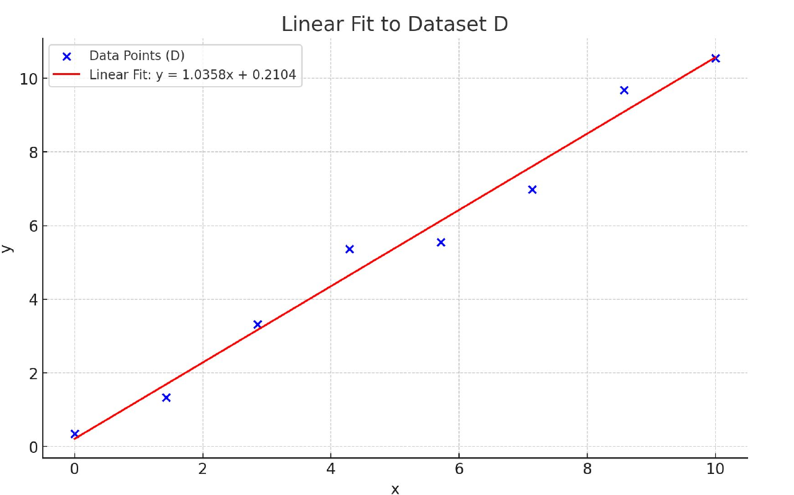
A simple family. The line passes near the points, through none of them.
Nudge One Point
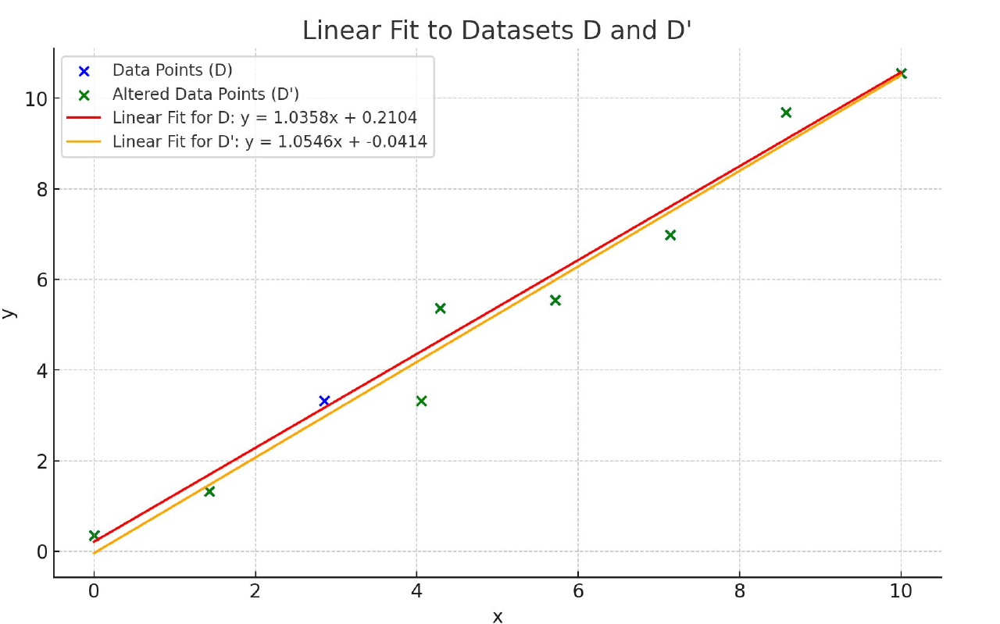
Move one measurement. The line barely notices.
A Curve Through Every Point
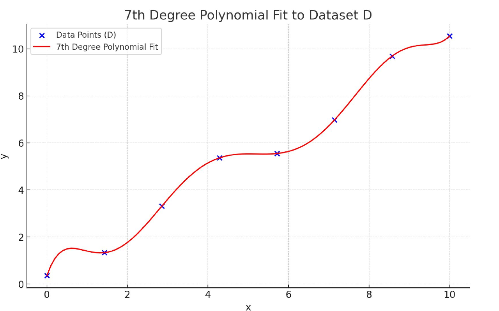
A richer family. Zero error on the examples. Perfect, apparently.
Nudge One Point Again
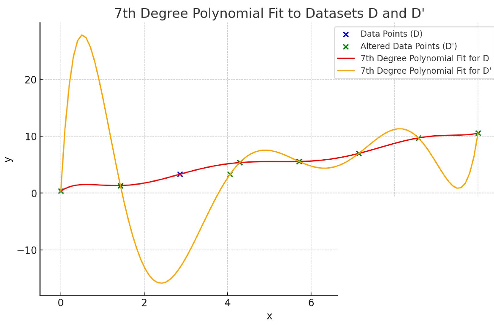
Same one measurement moved. The curve detonates.
Memorising Is Not Learning
Learned
Understands the pattern. Handles a new case.
Memorised
Reproduces the answer sheet. Fails the new case.
Zero error on the training data is a warning sign, not a trophy.
Three Fits, Same Data
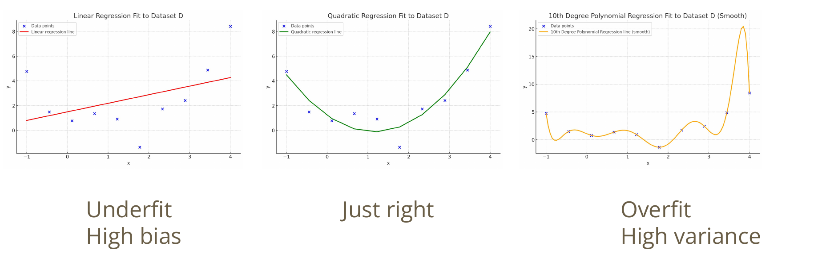
Ten points, three families. Only the family changed.
Two Ways to Be Wrong
High bias
Family too small. Misses the shape even with endless data.
High variance
Family too large. Chases the noise in whatever data you handed it.
Shrinking one usually grows the other. That trade is the whole craft.
More Data Tames It
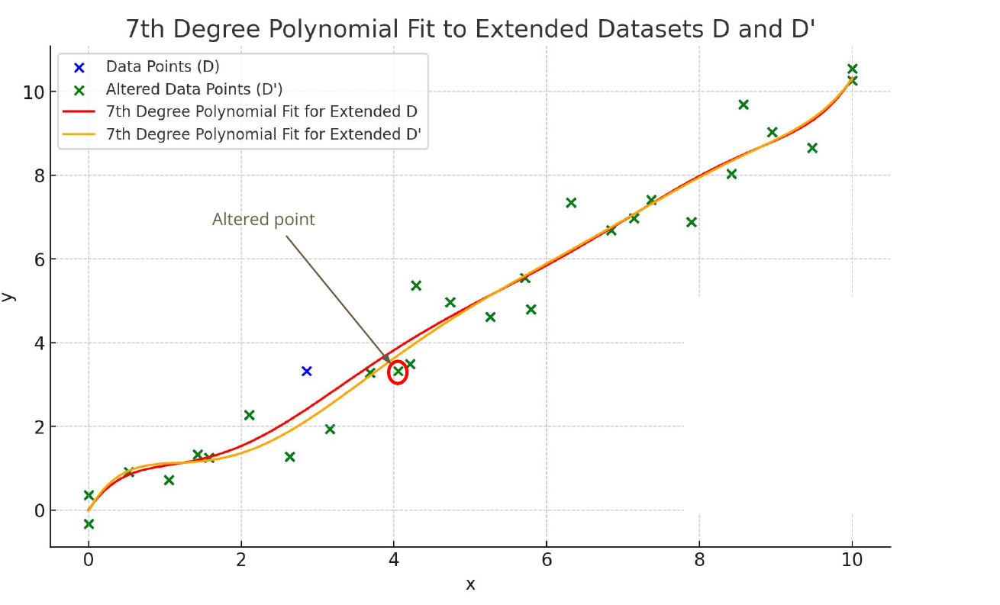
Same flexible family, far more points. Moving one changes almost nothing.
You Cannot Just Look
Real tables are too wide to eyeball. Overfitting needs a measurement.
Hold Some Data Back
The held-back rows are the only honest exam the model ever sits.
Perfect on Train, Lost Elsewhere
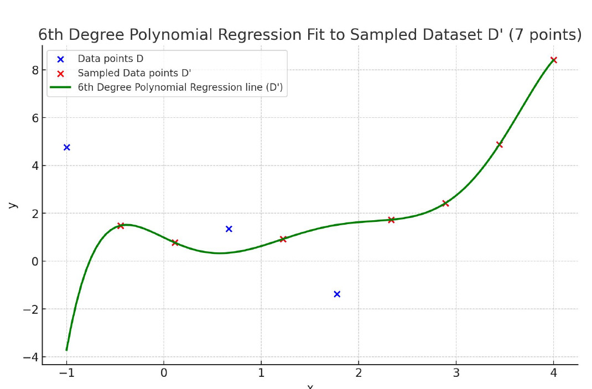
Red points fitted exactly. Blue held-out points nowhere near the curve.
When the Two Scores Agree
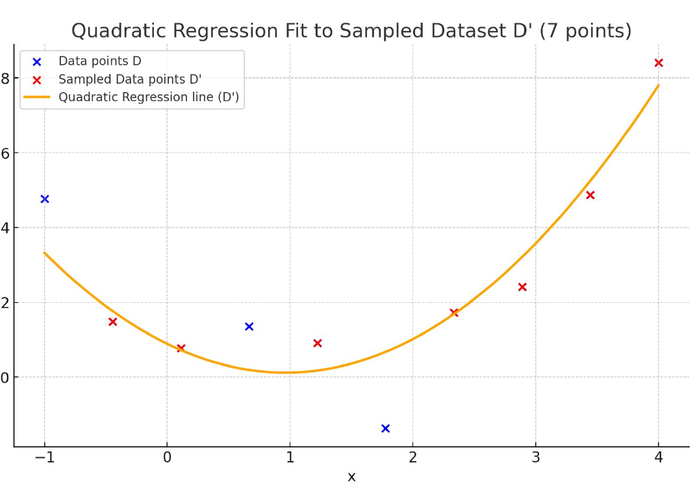
Train score close to validation score. That is generalisation.
Train, Validation, Test
Train
Fit the dials.
Validation
Choose between models.
Test
Report the real number.
Validation guides your choices, so it flatters you. Only a sealed test set does not.
Prefer the Simpler Story
Occam’s razor. The explanation needing fewest assumptions is usually right.
Reading the Two Numbers
| Train score | Validation score | Diagnosis |
|---|---|---|
| bad | bad | Underfitting. Enrich the family. |
| good | good | Healthy. Ship it. |
| perfect | bad | Overfitting. Act. |
Two numbers, checked at every training run. This is the whole diagnostic.
If You Are Overfitting
- Get more data. Always works. Usually expensive.
- Shrink the family. Fewer dials, fewer columns.
- Augment. Make new examples from the ones you own.
- Generate. Synthetic data helps, with care.
A Shifted Dog Is Still a Dog
Shift, flip, rotate, crop, add noise. One photo becomes twenty.
Free examples, if you know which changes leave the answer alone.
But It Depends on Your Data
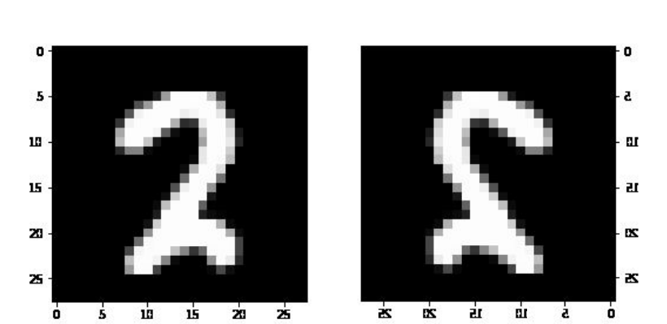
A mirrored dog is a dog. A mirrored ‘2’ is not a 2.
Model, Data, Compute
The three dials behind every modern AI budget
The Classic Picture
Textbook wisdom: past a point, bigger models get worse.
Then the Curve Broke
Push far past the peak and error falls again. Called double descent.
Three Dials
Model
How many dials. Billions of them.
Data
How many examples. Trillions of words.
Compute
How much chip time. Months of it.
Every frontier-model press release is a statement about these three.
Scaling Laws
Ten times the compute buys a known error reduction. Budgets rely on it.
Balance the Dials
Unbalanced
Huge model, thin data. Money burned.
Balanced
Grow model and data together. Same budget, better model.
A 2022 result showed most large models of the day were badly undertrained.
Hoffmann et al., “Training Compute-Optimal Large Language Models”, 2022
Compute Is Buyable, Data Is Not
- Chips. Expensive, but purchasable tomorrow.
- Public text. Largely consumed already.
- Your data. Nobody else has it.
The scarce dial is the one a competitor cannot order from a vendor.
What This Means for You
Ask
Which score is that number? Train, or held out?
Ask
How many examples do we actually own?
Invest
In collection and labelling, before model shopping.
Distrust
Any demo without a held-out number.
Today in Five Lines
- A straight line is a model. Loss scores it, training tunes it.
- More columns, curved columns: still a weighted sum.
- Flexible families memorise. Zero training error is a warning.
- Hold data back. Two numbers tell you which failure you have.
- Model, data, compute. Data is the dial money cannot buy.
Fit the pattern,
not the noise.